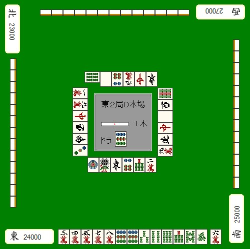
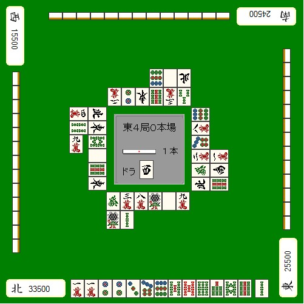
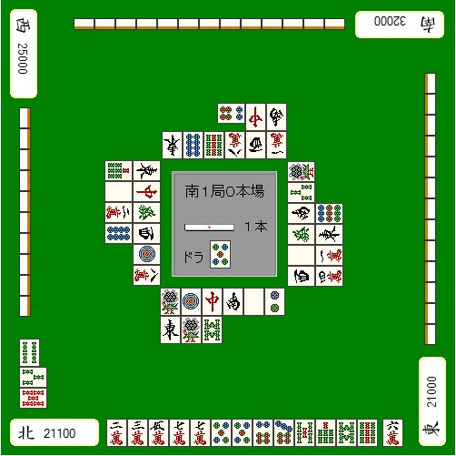

【日本麻雀讲座译文】攻守判断3—攻守判断的标准
【日本麻雀讲座译文】攻守判断3—攻守判断的标准 · 原网页
译文与整理说明
原正文和原图保持；九处未知按精确候选分别保留。独立限定辨识/教学影响证据仅允许忠实展示作者原有论证，不认证完整牌河、暗手、概率或最优。原技术未通过回执和原raw保持。
【审校范围（非原文）1】在例1图的转录和unknowns中保留左侧第4、5张及右侧第2、5张的明确未知和原有位置；不得填入猜测牌码或表示四家牌河已完整复原。原文段落
【审校范围（非原文）2】保留例1原图及其在正文中的位置，并按原始顺序保留例2、例3；目标和邻位近邻放大图是本次审查资料，不生成新的牌面细节。原文段落
【审校范围（非原文）3】保留正文原有顺序、原句、条件和强调语气，包括例1“立直的话”才有11600点、例2平和的可能条件、例3关于进张数与连续进攻的条件，以及理论中的“基本”。原文段落
【审校范围（非原文）4】保留各块原有tableContext、sourceSegments和标记；本次给出的正文块tableContext均为null，原有segments的marks均为空。原文段落
【审校范围（非原文）5】保留免责声明、译者及原文来源、例题标题、分隔、续篇标记和原始图序。原文段落
【审校范围（非原文）6】将作者的安全度、危险度、概率和攻守判断呈现为作者所写判断；不把本次有限辨识包装为完整牌河、暗手、概率或最优策略的独立验证。原文段落
【审校范围（非原文）7】附件编号及放大图说明若对读者显示，应区分历史加工附件与本次orderedImages；附件说明笔误属于source-note，不是教学错误。原文段落
免责声明： 以下文章的著作权等各种权利归原作者所有，翻译 By SeventhTG（XD）。如果你喜欢本文并有幸让你产生了转载的想法，请注明原作者、原文地址以及译者，谢谢。 原文地址： http://beginners.biz/osihiki/osihiki03.html ------------------------------------------------------------------------------------原文段落
那么，前一节我列举了攻守判断的要素原文段落
我们来看看实际的几个是应该攻，还是应该守的例子。原文段落
例1：原文段落

完整牌例文字与牌编码
中央：东2局0本场。白色立直棒右侧标示1根；下方“宝牌”标签右侧为9p。 座位及点数：下方东家24000，右侧南家25000，上方西家27000，左侧北家23000。 下方手牌，按屏幕从左至右：3m 4m 5m 7m 8m 9p 9p 3s 4s 6s 7s 8s 6z。右侧隔开的一张：6m。 下方弃牌，按屏幕从左至右：1p 1s 1z 6p 7s 2m。 上方弃牌，按屏幕从左至右：6s（相对上家正常牌向横置）5z 6p 9m 7z 1z。除横置的6s外，牌面相对屏幕倒置。 左侧弃牌，按屏幕从上至下：1m 9m 7z [风牌未辨明] [风牌未辨明] 3p。牌面相对屏幕顺时针旋转90°。 右侧弃牌，按屏幕从上至下：9s [风牌未辨明] 5z 7z [风牌未辨明] 9m。牌面相对屏幕逆时针旋转90°。 上方、左侧、右侧各有13张背面朝上的手牌。未见副露。 原图未显示的信息：左侧弃牌从上至下第4张的风牌牌码未辨明。；左侧弃牌从上至下第5张的风牌牌码未辨明。；右侧弃牌从上至下第2张的风牌牌码未辨明。；右侧弃牌从上至下第5张的风牌牌码未辨明。
看到这个牌的瞬间就有一种想扔棒子的冲动，一上来我就给了一个比较极端的例子。原文段落
【和牌的容易度】好型两面听牌原文段落
【打点】立直的话有11600点原文段落
【牌的危险度】发并不是特别危险的一张牌原文段落
【弃和成功率】安全牌只有6索原文段落
不管怎么看，这牌没有理由不对日。应该毫不犹豫地扔棒子对攻。原文段落
------------------------------------------------------------------------------------原文段落
例2：原文段落

完整牌例文字与牌编码
中央：东4局0本场。白色立直棒右侧标示1根；下方“宝牌”标签右侧为3z。 座位及点数：下方北家33500，右侧东家25500，上方南家24500，左侧西家15500。 下方手牌，按屏幕从左至右：1m 1m 2p 2p 3p 7p 9p 5s 5s（赤）6s 7s 8s 9s。右侧隔开的一张：2s。 下方弃牌：第一行从左至右为6z 3m 8m 1s 5z 9m；第二行在第一行左端下方，从左至右为1s 2s。 上方弃牌：靠中央一行按屏幕从左至右为2m 2p 1z 9s 3m 3s；外侧一行位于其右端上方，从左至右为9p 5z 4z。牌面均相对屏幕倒置。 左侧弃牌：靠中央一列按屏幕从上至下为4z 1z 8s 5z 9s 1z；外侧一列从上至下为4m 4s 9m。外侧9m相对左家正常牌向横置，屏幕上呈直立；其余牌面相对屏幕顺时针旋转90°。 右侧弃牌：靠中央一列按屏幕从上至下为9p 8m 7p 3m 6z 4z；外侧一列与内列后三张对齐，从上至下为1m 2z 9s。牌面均相对屏幕逆时针旋转90°。 上方、左侧、右侧各有13张背面朝上的手牌。未见副露。
接下来是一个明显该弃和的例子。原文段落
【和牌的容易度】两向听而且还有愚型，鸣牌也没什么帮助，要和出概率很低。原文段落
【打点】立直宝牌1，运气好的可能有平和原文段落
【牌的危险度】最没用的这张2索危险度还是比较高原文段落
【弃和成功率】8、9索两种现物，而且1万的安全度比较高原文段落
还有就是，自己是TOP，而立直的人是四位。这些条件结合起来看，没有必要去进攻。原文段落
为了以防别人追立，先从8索开始切，共同的安全牌9索留到以后的巡目再切。原文段落
以上是一些很容易明白的例子，所以还没什么难度。实际上进攻和防守的因素混合在一起的比较难以判断的情况比较多。原文段落
------------------------------------------------------------------------------------原文段落
例3：原文段落

完整牌例文字与牌编码
中央：南1局0本场。白色立直棒右侧标示1根；下方“宝牌”标签右侧为5p。 座位及点数：下方北家21100，右侧东家21000，上方南家32000，左侧西家25000。 下方手牌，按屏幕从左至右：2m 3m 5m 7m 7m 5p 5p 6p 7p 5s 7s 8s 9s。右侧隔开的一张：6m。 下方弃牌：第一行从左至右为1s 1p 7z 2z 5z 2p；第二行位于第一行左端下方，从左至右为1z 1s 8s。 上方弃牌：靠中央一行按屏幕从左至右为1z 8p 9s 8m 3z 2m；外侧一行位于其右端上方，从左至右为6p（相对上家正常牌向横置）7z 2z。除横置6p外，牌面均相对屏幕倒置。 左侧弃牌：靠中央一列按屏幕从上至下为1z 7z 6z 3z 1p 8m；外侧一列从上至下为7s 5z 2m 8p。牌面均相对屏幕顺时针旋转90°。 右侧弃牌：靠中央一列按屏幕从上至下为1s 3s 2z 6z 5z 3z；外侧一列与内列后四张对齐，从上至下为9p 1z 1m 4m。牌面均相对屏幕逆时针旋转90°。 左下角西家副露，按屏幕从上至下：4s 3s 5s（赤）。4s相对西家正常牌向横置，在屏幕上呈直立；3s与赤5s的牌面相对屏幕顺时针旋转90°。 上方、右侧各有13张背面朝上的手牌；左侧有10张背面朝上的手牌。
【和牌的容易度】一向听，进张不太多了原文段落
【打点】门平宝牌1~3，足够了原文段落
【牌的危险度】没有通过的筋牌比较多，7万、5索都很危险原文段落
【弃和成功率】现物两张、筋牌一张，估计能够弃和成功原文段落
除了基本的判断材料之外，南场的TOP立直，看来是想确定自己的领先优势。原文段落
这样的状况下，为了减少自己的迷惑、冷静的进行攻守判断，有攻守判断的“脊柱”材料是非常重要的。原文段落
这个讲座里，我比较推荐以“自己的向听数”来进行判断。原文段落
具体来说就是，“要与立直对攻，自己要先听牌了”是基本；“一向听的话，就可以攻一巡”，这么记就好了。原文段落
为什么一向听一下不能对攻呢？原文段落
自己听牌之前是不会有获得点棒的机会的。即使对攻，也不能保证下一巡能够维持听牌，说不定危险牌还回来。原文段落
自己还没有听牌的时候切危险牌，只是给对手增加机会而已。原文段落
宝牌2的一向听，听牌了的话，打点比较有优势。原文段落
如同例3一样，那样的进张数要连续攻2次也是不利的。还是弃和比较好。原文段落
理论：原文段落
攻守判断以向听数做主线是比较主流的方式。听牌的话就攻，一向听的话攻一次，两向听以下弃和是基本。原文段落
攻守判断想要模式化是非常困难的，所以下一节就不在打算再系统化了，而去考虑一下赤牌麻将中应该攻、还是该守的实例。原文段落
（待续）原文段落